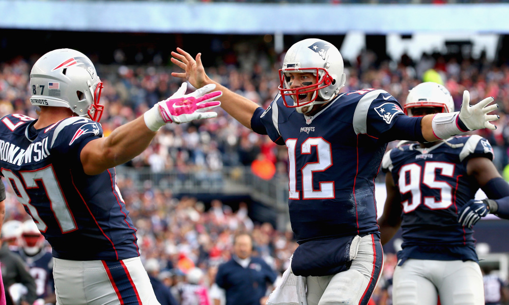

 The Patriots haven't always been my favorite team, the AZ Cardinal was. But as I was growing up I became obsessed with the excitement of watching Tom Brady take apart other teams defenses. What I also loved about the patriots was the fact that even when they were trailing behind second half they would somehow comeback and win the game.
When Brady and Gronkowski are both on the field, they form the NFL’s best quarterback-receiver combination. I fell in love with the patriots, just growing up watching Gronk and Brady play, it really inspired me to start playing football growing up. Even though they will end up retiring in the coming years, they've made a bigger impact on me then they'll ever know.